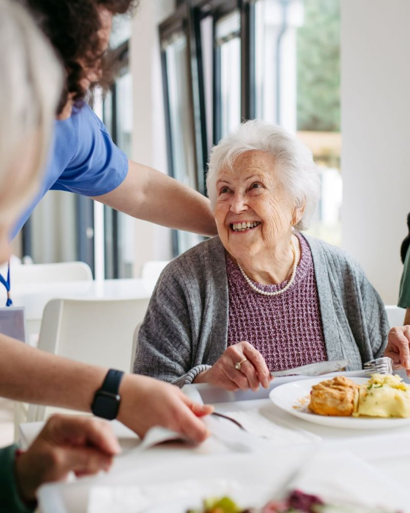
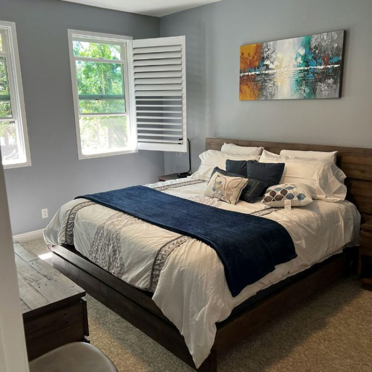
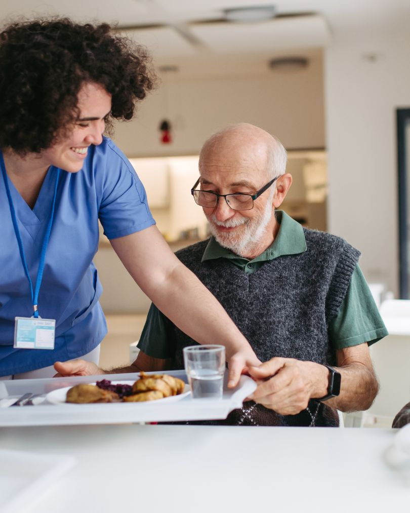

Rhosneigr, Anglesey residential care home for elderly people
Residential Care Home in Rhosneigr, Anglesey
Small, homely elderly care for adults without nursing
Bodelwyddan Residential Care provides warm residential care for elderly people in Rhosneigr, Anglesey. With 16 single bedrooms, many with en-suite facilities, a nurse call system and a calm setting near Broad Beach, our home supports older adults who need daily care, comfort, companionship and reassurance.
- Care Home Service, Adults Without Nursing
- 16 registered places and single bedrooms
- Registered and inspected by Care Inspectorate Wales
Residential care
Daily elderly care, companionship, meals and a safe homely routine.
16 single bedrooms
Individual rooms, many with en-suite facilities, TVs and call systems.
Adults without nursing
Residential care for older adults who do not need full-time nursing care.
Near Broad Beach
A calm Rhosneigr location for families searching across Anglesey.

About Bodelwyddan Residential Care
A small residential care home where residents are known as individuals
Bodelwyddan Residential Care is a small care home for elderly people in Rhosneigr, Anglesey. We provide residential care for adults who need day-to-day support, safety, meals, companionship and a homely place to live, but who do not require full-time nursing care.
The home has long-standing local roots and has been run by the current care home team since April 2000. Our aim is to keep the home warm, safe, comfortable and personal, with care shaped around each resident’s needs, routines and preferences.
Individual elderly care
Support shaped around each resident’s needs, routines and comfort.
Home cooking
Care and cooking are part of the home’s long-standing local reputation.
Residential care in Anglesey
Elderly care, daily support and a homely place to live
For families comparing care homes, elderly care homes or residential homes in Anglesey, this section answers the practical questions: what care is provided, what the rooms offer, what support is nearby and how to enquire.
Rooms, comfort and safety
Individual rooms in a comfortable residential care home in Rhosneigr
Every room at Bodelwyddan Residential Care is individual. Most rooms have en-suite facilities and TVs, and some have en-suite showers. Every room is fitted with a call system so residents can ask for assistance when they need it.
The home also has a stair lift to the first floor, a front drive, parking and a garden area, helping create a practical, calm and familiar environment for elderly residential care.

Location and areas served
Residential care in Rhosneigr, Anglesey, close to Broad Beach
Bodelwyddan Residential Care is based on Ffordd Belan in Rhosneigr, Anglesey, LL64 5JG. Families often contact us when searching for a care home in Rhosneigr, elderly care in Anglesey, a residential care home near Broad Beach or a small care home in North Wales.
The home welcomes enquiries from local families and from people looking for residential care in Anglesey and nearby North Wales areas.

Why families choose us
A smaller care home for families who want reassurance, warmth and clear communication
Choosing a residential care home is not just about a room. Families want to know their loved one will be noticed, spoken to kindly, supported properly and able to settle into a familiar routine. Bodelwyddan Residential Care is intentionally small, homely and personal.
Registered and inspected in Wales
Registered with Care Inspectorate Wales
Bodelwyddan Residential Care is registered with Care Inspectorate Wales as a Care Home Service for adults without nursing. Families can use the official CIW profile to check registration and inspection information before making an enquiry.
Care Inspectorate Wales profile
View the official registration and inspection profile for Bodelwyddan Residential Care.
View CIW profileHelpful answers
Questions families ask before choosing a residential care home
Clear answers for people searching for care homes, elderly care homes and residential care in Rhosneigr, Anglesey and North Wales.
Arrange a conversation
Speak to Bodelwyddan Residential Care about elderly residential care
If you are looking for a small care home in Rhosneigr, elderly care in Anglesey or a residential care home for an older family member, please contact Bodelwyddan Residential Care. We can talk through care needs, availability and whether the home may be suitable.